Thứ tự mới của video: UGC Ads (1, dài nhất) → Video Ad Clone (2) → Ad Animation (3). Cả video dùng một sản phẩm: cây son đỏ thẫm vỏ đen viền vàng, chính là sản phẩm đang có trong Promer. Khối này mở bằng quảng cáo UGC đã xong (cách các video dạy UGC nhiều view nhất trên YouTube đều làm), rồi đi qua từng bước trên Promer. Phần dưới có 2 bản A và B cho quảng cáo 15 giây, cùng 5 cảnh, cùng mốc giây, cùng lời, để anh ghép chéo (ví dụ cảnh 1 của A + cảnh 3 của B).
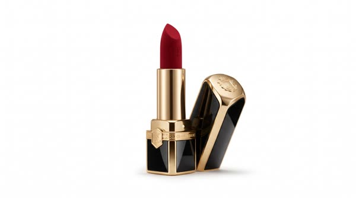
| Cảnh | Giây | Việc | Lời chính | Hình |
|---|---|---|---|---|
| SC01 | 0:00–0:27 | Kết quả trước | "Here's where we're headed. Fifteen seconds, one creator, one lipstick." → chiếu nguyên quảng cáo UGC 15 giây → "Nothing in that ad was filmed…" | Emma góc A, rồi quảng cáo toàn khung |
| SC02 | 0:27–0:41 | Vì sao UGC | "Nobody trusts a lipstick until they see it on someone's lips." | Emma góc A/B, chèn 1 giây cận môi của creator |
| SC03 | 0:41–0:58 | Chuẩn bị 4 ảnh | "You can add up to four images… one on white, one with the cap off, one close-up of the bullet." | UI ô Product image 4 ô, ba ảnh son lần lượt rơi vào |
| SC04 | 0:58–1:24 | Cách bắt đầu + 6 format | "Get UGC ideas, select a format, or add your own idea… six formats…" | UI "How do you want to start?" rồi bảng 6 format, khoanh Direct Testimonial và POV Demo |
| SC05 | 1:24–1:53 | 4 câu hỏi, avatar, giọng | "Who buys this? What do they want? Why this lipstick? What proves it?" | 4 câu hiện thành thẻ chữ; UI thanh 9:16 · 15s · avatar · voice |
| SC06 | 1:53–2:16 | Sửa kịch bản | "Real people don't say luxurious velvet finish. They say, it didn't move all day, and I drank coffee." | Kịch bản trên UI, câu "luxurious velvet finish" bị gạch, câu đời thường gõ đè lên |
| SC07 | 2:16–2:52 | Dựng thành quảng cáo | "Cut often… talking shots for trust, close-ups for proof… one voice for the whole ad." | Timeline 5 cảnh của quảng cáo, chiếu lại bản dựng xong |
| SC08 | 2:52–3:23 | Chỗ hay hỏng | "Watch the hands… check the mouth when she says the product name." | So khung: son đúng vỏ / son sai vỏ; miệng méo ở tên sản phẩm; che bằng cận son |
| SC09 | 3:23–3:32 | Sang Clone | "Then don't guess. Start from what's already working." | Emma góc B |
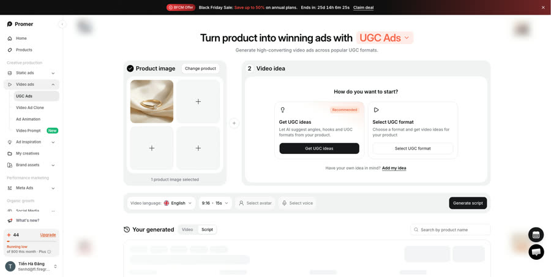
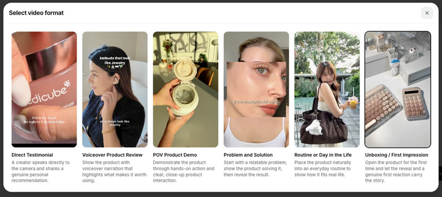
A Direct Testimonial · trong xe, nắng sáng: creator tự quay bằng camera trước, nói thẳng vào máy, tô son bằng gương che nắng. Cảm giác "vừa phát hiện, kể ngay". B POV Product Demo · bàn trang điểm buổi sáng: góc nhìn của chính người dùng, cận tay, cận môi, gần như không thấy mặt. Cảm giác "xem tận mắt màu son".
Hai bản dùng cùng lời, đúng như câu trong video: "I'd test the direct testimonial against a POV demo."
Cận mặt trong xe, cầm thỏi son giơ sát ống kính, nắng chiếu qua kính xe. Chữ nổi: "found my red".
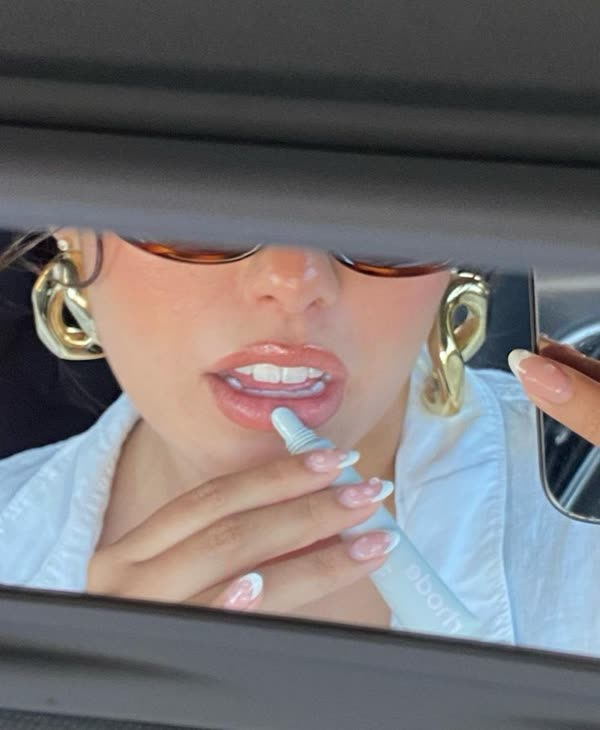
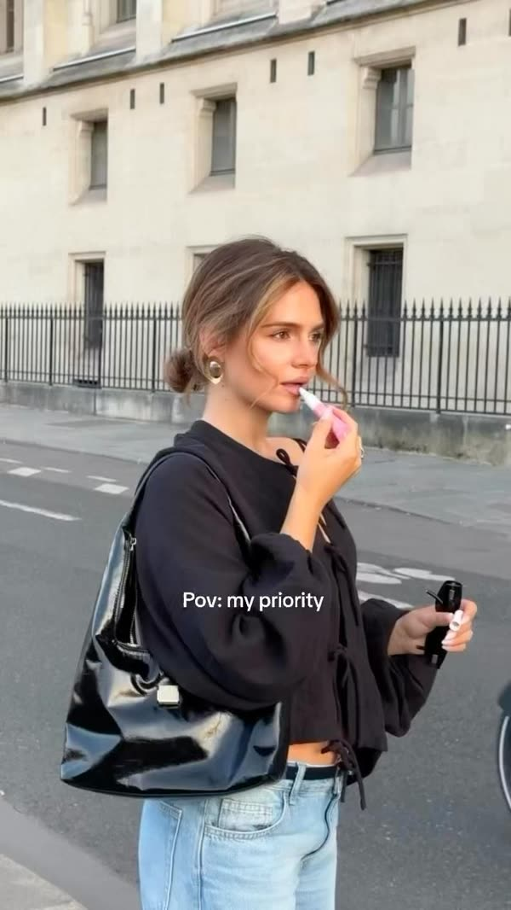
Cận tay vặn thỏi son vàng bung lên trước cửa sổ, nắng xiên, bóng tay đổ dài. Chữ nổi: "found my red".
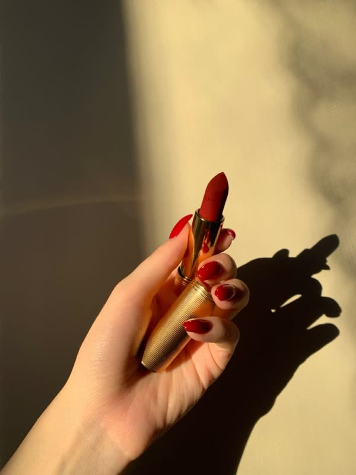
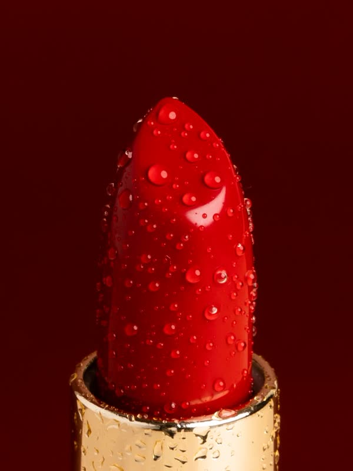
Lật gương che nắng, tô một nét, mím môi, cười vào máy.
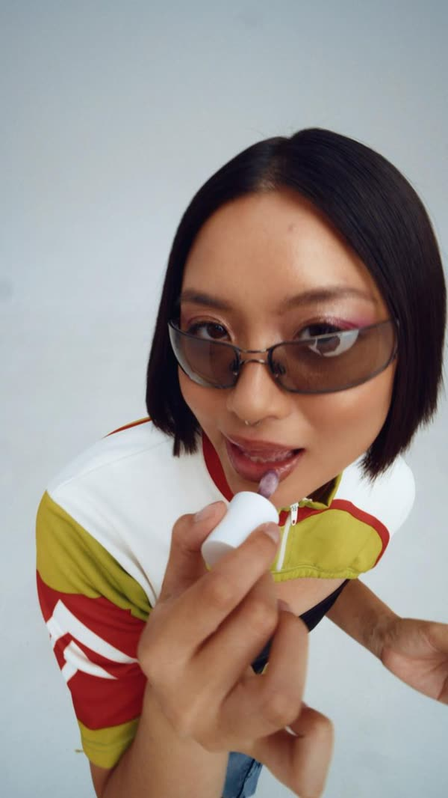
POV cực cận: đầu son vàng lướt qua môi trong một nét, thấy rõ chất lì.
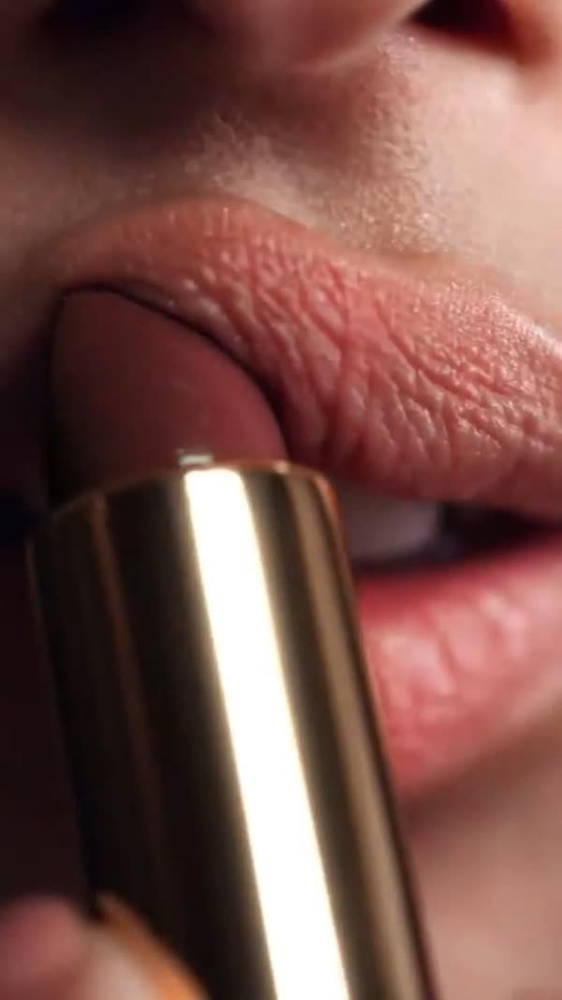
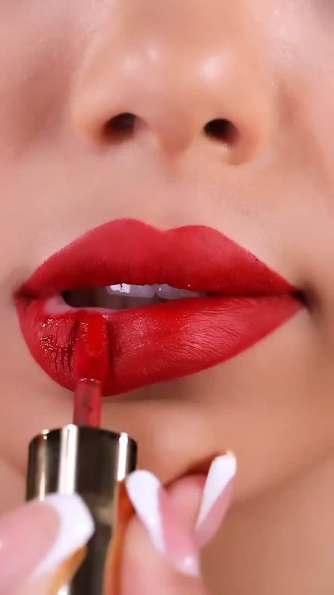
Đặt ly cà phê mang đi vào khay, quay lại cận môi vẫn đỏ đều.
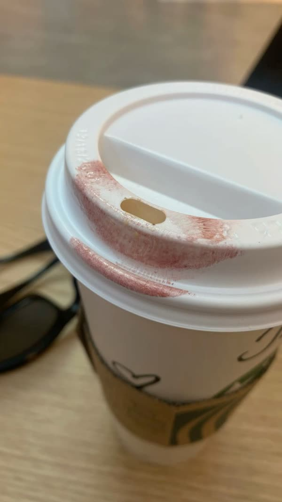
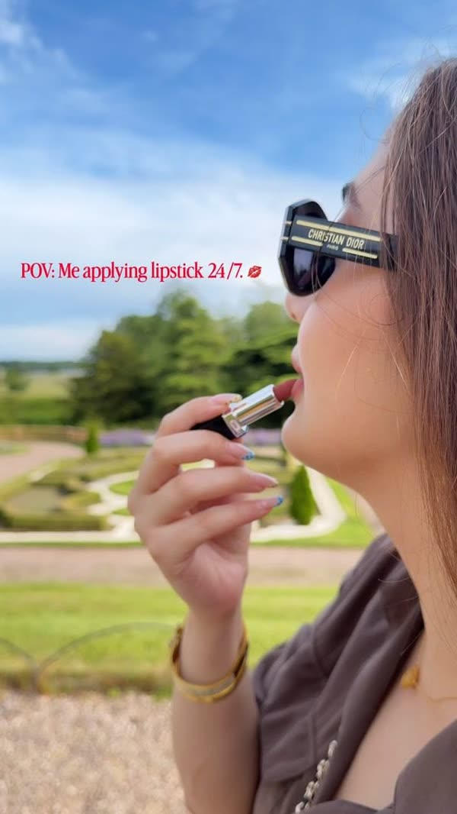
Ly sứ trắng trên bàn cạnh thỏi son, rồi tay đưa gương nhỏ lên: môi vẫn đủ màu.
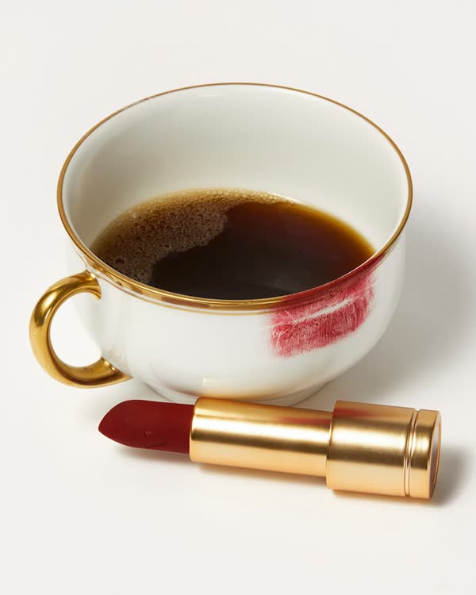
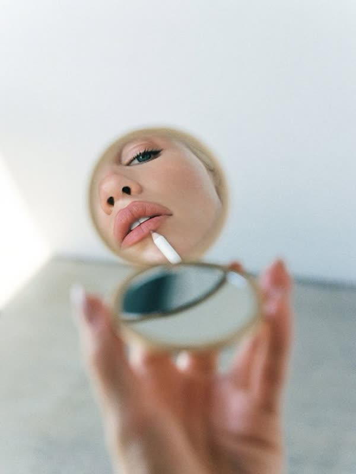
Giơ thỏi son ra trước kính chắn gió, vỏ đen viền vàng bắt nắng.
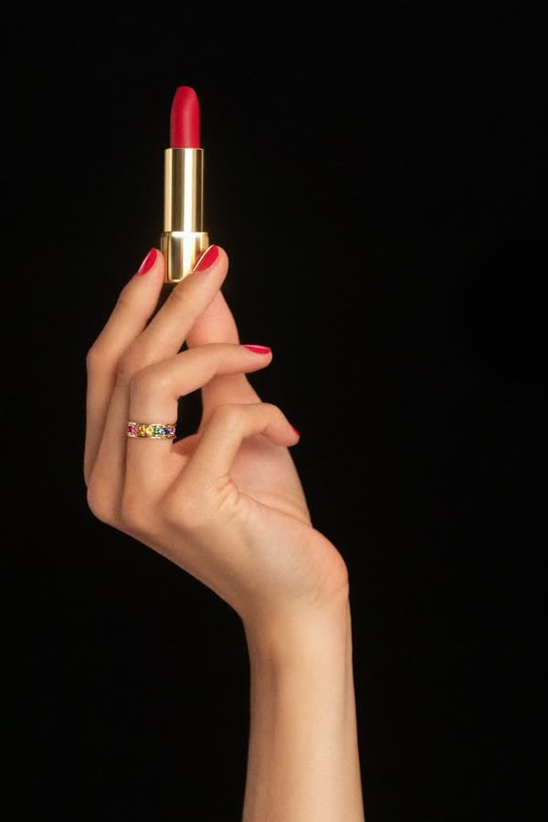
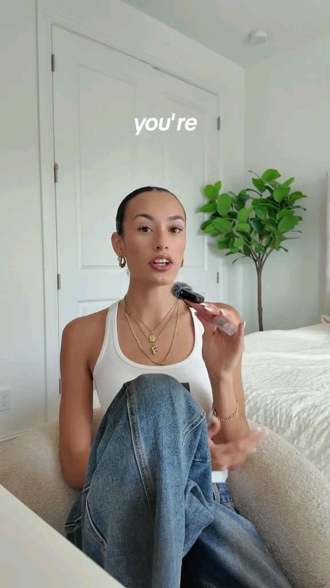
Quẹt thử một vệt son lên mu bàn tay, đặt cạnh vỏ son, nắng lướt qua.
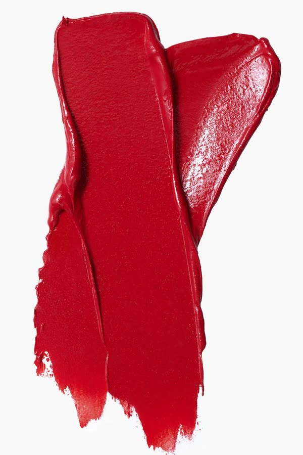
Shot đẹp nhất của cây son làm ở F3 Ad Animation (packshot creative), chữ tên son + nút.
Nữ khoảng 27 tuổi, tóc nâu buộc thấp, áo thun trắng, trang điểm nhẹ, móng ngắn sơn đỏ. Phải khác hẳn người dẫn Emma (áo len kem, studio tím) để người xem không lẫn người dẫn với người trong quảng cáo. Mọi cảnh tạo từ ảnh gốc của creator (không sửa nối ảnh này sang ảnh khác) và có ảnh son 3 góc làm tham chiếu, đúng cách các video UGC nhiều view dạy.
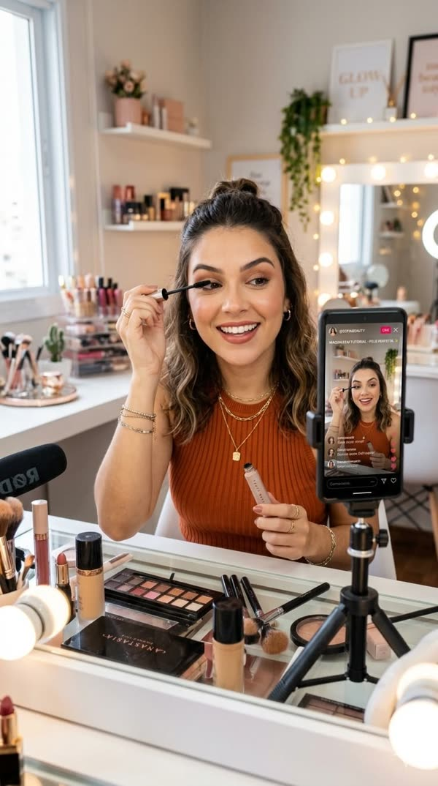
| Vì sao họ dừng | Khối mở bằng một quảng cáo UGC trông như thật, rồi nói "nothing in that ad was filmed". |
|---|---|
| Mang về được gì | 4 câu hỏi để viết kịch bản; mẹo đọc to kịch bản và đổi câu quảng cáo thành câu đời thường; 4 ảnh sản phẩm; cắt ngắn, một giọng; kiểm tay và miệng. Dùng được cả khi không dùng Promer. |
| Xem xong làm gì | Làm một quảng cáo creator cho sản phẩm của mình, thử 2 avatar cùng một kịch bản. |
03_YouTube/video-dai/L01/02_Kich-ban/kich_ban_theo_tinh_nang_v3_Claude.py (103 câu, khoảng 8,3 phút giọng + các quảng cáo chèn ≈ 9 phút).